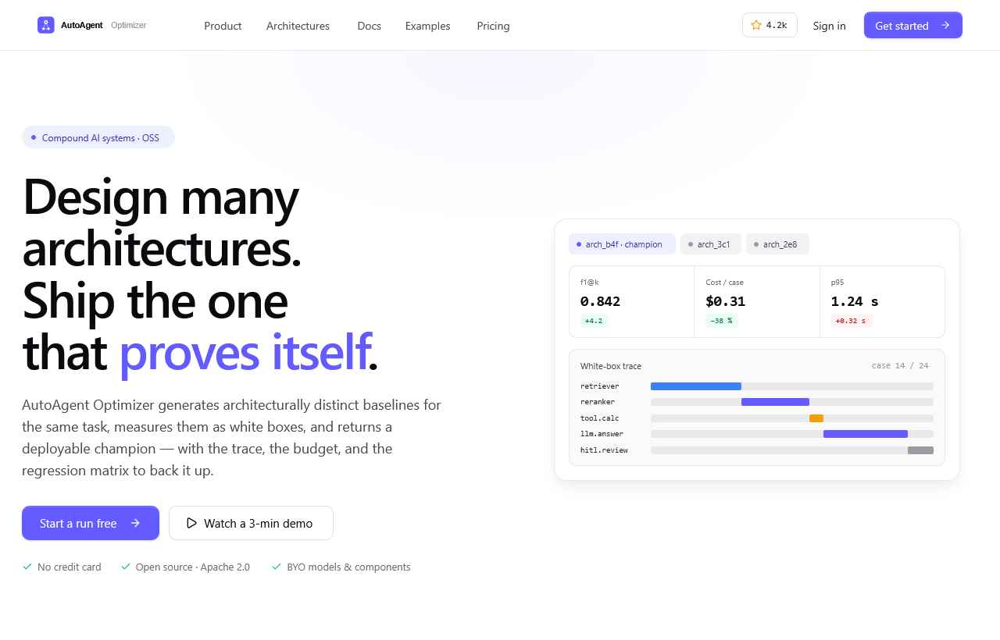
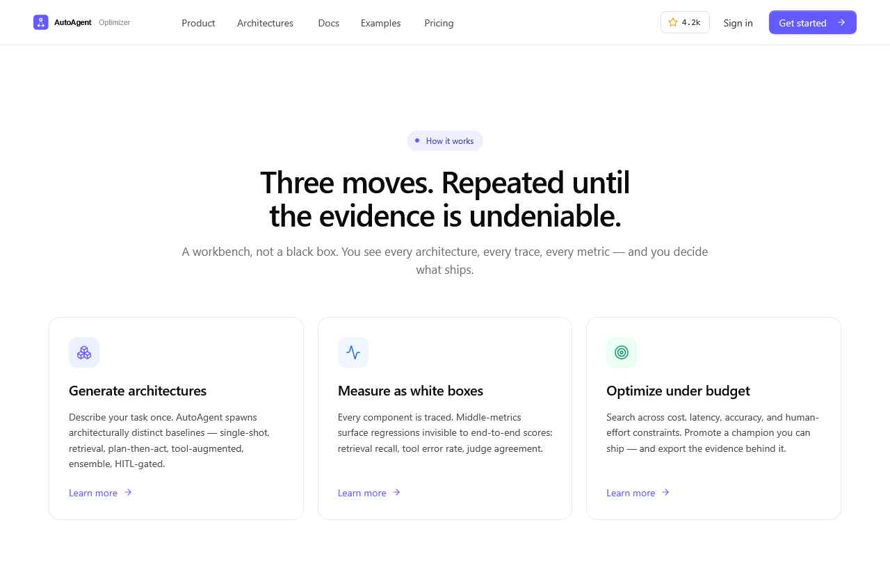
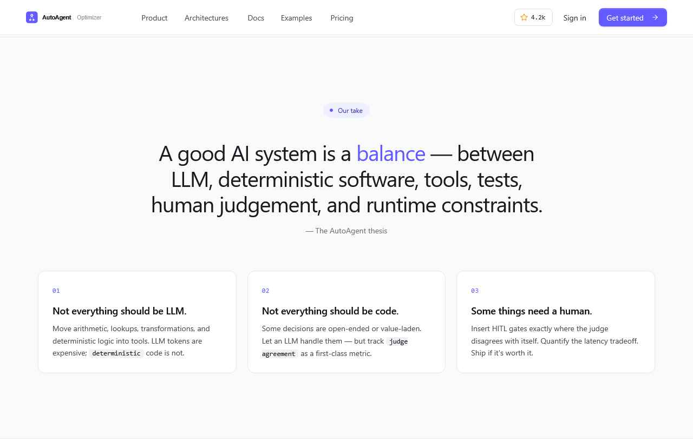
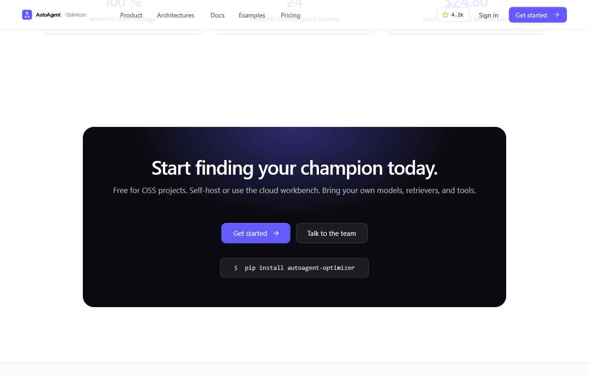
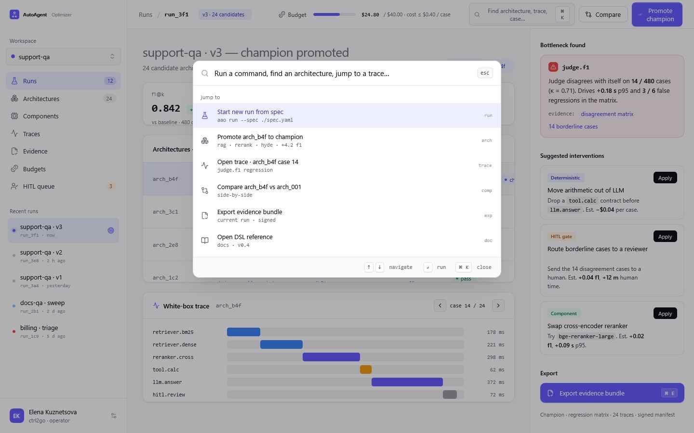

A complete design specification covering brand, color, typography, components, voice, and two reference UI surfaces — workbench app and marketing landing.
The mark is a solid indigo tile containing three connected nodes — a stylized compound architecture, with the champion node enlarged at the top. It reads as "network", "structure", "best of many" — without ever shouting "AI".
| Property | Value | Note |
|---|---|---|
| Tile shape | rounded square · rx = 14 px | Friendly, modern. Never sharp-cornered. |
| Tile color | #635BFF · indigo-500 | Brand indigo. Solid — never gradient. |
| Glyph | 3 nodes + triangle outline | Top node = champion, larger, indigo dot. |
| Glyph color | white at 0.55 opacity | Lines; nodes are full opacity white. |
| Wordmark | Geist 600 + Geist 400 | "AutoAgent" bold, "Optimizer" subtle. |
| Clear space | ≥ 12 px around mark · ≥ 24 px around lockup | Never crowd it. |
| Minimum size | mark ≥ 24 px · lockup ≥ 120 px wide | Below that, switch to mark only. |
#635BFF — no tints, no gradient.Hierarchy lives in the neutrals. The single indigo accent marks the one thing in a view that matters — primary action, champion, focus. Status colors are reserved for state, never decoration.
indigo-500 ★ is the primary brand color — buttons, links, champion, focus rings. 600 for hover, 700 for pressed. 50/100 for tinted backgrounds (e.g. champion row, eyebrow pill, accent bg).
| Token | Value | Where to use |
|---|---|---|
| --bg | gray-0 | Default page background |
| --bg-subtle | gray-50 | Section bg, app shell bg, table headers |
| --bg-muted | gray-100 | Input bg, hover surfaces, chips |
| --fg | gray-900 | Primary text, headlines |
| --fg-muted | gray-500 | Secondary text, captions, metadata |
| --fg-subtle | gray-400 | Placeholder, tertiary, icons |
| --border | gray-200 | Default border (buttons, inputs) |
| --border-muted | gray-150 | Card hairlines, dividers |
| --accent | indigo-500 | Primary CTA, champion, link, focus |
| --accent-bg | indigo-50 | Tinted bg for selected/champion rows |
| --link | indigo-600 | Hyperlink color |
Geist (sans) plus Geist Mono. No serifs, no display fonts, no editorial drama. Headlines are tight (−0.025 to −0.035em tracking), body is generous (line-height 1.55–1.65), code is mono throughout.
Used for: all code, metric values (0.842, $0.31), identifiers (arch_b4f), CLI commands, table cells with numeric data, keyboard shortcuts.
@import url('https://fonts.googleapis.com/css2?family=Geist:wght@300;400;500;600;700&family=Geist+Mono:wght@400;500;600&display=swap');
--font-sans: 'Geist', ui-sans-serif, system-ui, ...;
--font-mono: 'Geist Mono', ui-monospace, 'SF Mono', Menlo, ...;
Both Geist and Geist Mono are open-licensed and load freely from Google Fonts. No substitutions needed.
All spacing on a 4-px scale (most multiples of 8). Radii are medium-soft — never sharp, never bubble-round. Shadows are warm gray, never colored.
Shadows always cool-gray, never colored. Combine --shadow-xs with a hairline border on cards (boxshadow + 1 px border) for the cleanest result.
All icons from Lucide. 1.6 px stroke, square line-caps, friendly geometry. Icons inherit currentColor — color them via parent CSS, never hardcode fills.
| Size | Use | Stroke |
|---|---|---|
| 14 px | Inline with body text — inside a sentence or button | 1.6 px |
| 16 px | Dense rows, table cells, sidebar nav items | 1.6 px |
| 20 px | Top bar, secondary nav, prominent rows | 1.6 px |
| 24 px | Section headers, feature cards | 1.6 px |
| 40 px | Empty states, illustration-scale | 1.4 px |
Live examples below — full implementation in preview/ cards and ui_kits/. Every component uses the tokens above. Don't recreate; copy.
25 preview cards live in preview/ — open them directly to see every state, every variant.
| Category | Components | Where |
|---|---|---|
| Brand | Mark, lockup (light + dark), tagline, favicon | preview/brand-*.html · assets/ |
| Color | Indigo scale · neutrals · status colors · semantic surfaces | preview/colors-*.html |
| Type | Display, UI, mono, scale ladder, editorial pairing | preview/type-*.html |
| Spacing | Scale, radii, shadows, borders + focus | preview/spacing-*.html |
| Components | Buttons · status · inputs · cards · tabs · icons · trace · empty · metric strip | preview/comp-*.html |
The way Stripe and Vercel talk in their product UI — direct, clear, low-jargon, no marketing slop. No emoji, anywhere. No AI mysticism.
| Lean toward | Avoid |
|---|---|
| Direct, plain-English engineering terms | "Empower", "unleash", "supercharge" |
| Sentence case, friendly imperative verbs | TITLE CASE MARKETING SHOUTS |
| Concrete measurements (numbers, deltas, units) | Vague magic ("intelligent", "AI-powered") |
| Honest tradeoffs (e.g. +0.04 f1 vs +12 m human time) | Overclaiming, hyperbolic language |
| Code, identifiers, metrics in monospace | Paraphrasing technical terms in prose |
arch_b4f · +4.2 f1, −38 % cost · Evidence exported."| Rule | Example |
|---|---|
| Percentages with en-dash, space before % | −38 % · +24 % |
| Metric deltas always carry sign | +4.2 · −1.7 · +0.038 |
| Time: lowercase units, space between number and unit | p95 1.2 s · 14 m human time |
| Counts: lowercase k for thousands | 24 candidates · 1.2 k traces |
| Money in code blocks, no space around $ | cost <= $0.40 · $24.80 |
Soft, airy, generous whitespace. Sticky nav with blurred backdrop. Hero with a live-feeling product card on the right. Three feature tiles with tinted icons. Quote-led philosophy section. Proof matrix table. Dark CTA card with indigo glow. Standard footer.

White at 85 % opacity, backdrop-filter: blur(10px). Star count bubble has the amber star icon as the only color hint.
Indigo-50 background, indigo-700 text, indigo-500 dot. Used at the top of every section to anchor the eye.
Geist 600 at 64 px, tracking −0.035em. One indigo accent phrase pulls the eye to the value proposition.
Live-feeling preview of what the workbench actually shows. Soft shadow, 16 px radius. Sells the product by showing it.



Source: ui_kits/landing/index.html — open it in a browser or import the React components from the same folder.
Three-column layout: sidebar (264 px) · main · intervention rail (340 px). Top bar has crumb, budget meter, search + actions. Champion is highlighted with an indigo gradient row + pill. The trace viewer below uses the same span-type colors as the rest of the system.

Workspace picker · primary nav · recent runs list. Active route uses indigo-50 bg + indigo-700 text + indigo-500 icon.
In the top bar — indigo fill on gray track. Always shows current spend / cap and per-case constraint.
Champion row gets a soft indigo gradient (left-heavy). Other rows are flat white with a hover. Status pill on the right.
White surface, span-type colored bars. Same color language across legend + bars. The one fail span turns red.
Red-tinted bottleneck card, three suggested interventions with tinted tags, indigo export button at the bottom.
Toggle via ⌘ K. Glass-blur overlay, white card, indigo selected row. Standard pattern.
Source: ui_kits/app/index.html. Each panel is a separate JSX file in the same folder — copy the ones you need.
Every file is human-readable HTML, CSS, JSX, or SVG. No build step required.
| Path | What it is |
|---|---|
| README.md | Full written spec — voice, visuals, iconography. |
| SKILL.md | Cross-compatible loader so this system can be used in Claude Code. |
| colors_and_type.css | All design tokens as CSS custom properties. Link this and use the vars. |
| Handoff.html | This document. |
| Path | Purpose |
|---|---|
| assets/logo-mark.svg | Primary mark — light surfaces |
| assets/logo-mark-inverse.svg | Mark — dark surfaces |
| assets/logo-lockup.svg | Mark + wordmark — light |
| assets/logo-lockup-inverse.svg | Mark + wordmark — dark |
| assets/favicon.svg | 32 px favicon |
| Path | Contents |
|---|---|
| ui_kits/landing/index.html | Full landing page assembled |
| ui_kits/landing/*.jsx | Nav · Hero · Features · Philosophy · ProofMatrix · CTA · Footer |
| ui_kits/app/index.html | Full workbench assembled |
| ui_kits/app/*.jsx | Sidebar · TopBar · MetricStrip · ArchList · TraceView · InterventionRail · CommandPalette |
| Path | Cards |
|---|---|
| preview/brand-*.html | 3 brand cards |
| preview/colors-*.html | 4 color cards |
| preview/type-*.html | 5 type cards |
| preview/spacing-*.html | 4 spacing cards |
| preview/comp-*.html | 9 component cards |
colors_and_type.css and the assets/ folder to your project.<link rel="stylesheet" href="colors_and_type.css"><script src="https://unpkg.com/lucide@latest/dist/umd/lucide.min.js"></script>color: var(--accent), background: var(--gray-50), etc.preview/comp-*.html or React components from ui_kits/.